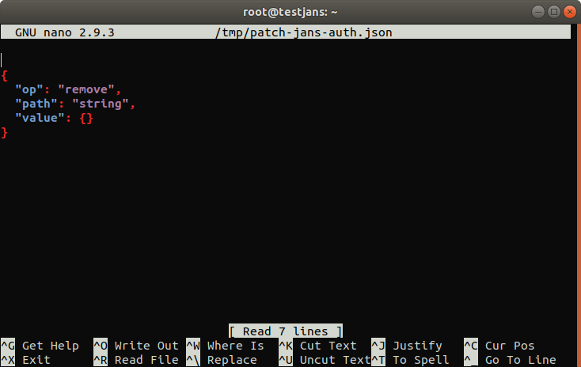
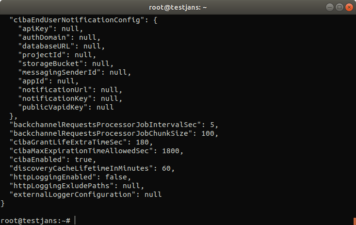

Janssen Authorization Server#
Prerequisite: Know how to use the Janssen CLI in command-line mode
To get info about Jans Authorization Server operations:
jans cli --info ConfigurationProperties
Operation ID: get-properties
Description: Gets all Jans authorization server configuration properties.
Operation ID: patch-properties
Description: Partially modifies Jans authorization server AppConfiguration properties.
Schema: Array of JsonPatch
Operation ID: get-properties-persistence
Description: Returns persistence type configured for Jans authorization server.
To get sample schema type jans cli --schema <schma>, for example jans cli --schema JsonPatch
Jans Authorization server has two operations id to get/modify its properties.
Table of Contents#
- Janssen Authorization Server
- Table of Contents
- Get All Jans Auth Server Configuration Properties
- Partially Modify Jans Auth Server Configuration Properties
- Get Persistence type for Jans Auth
Get All Jans Auth Server Configuration Properties#
It returns all the information of the Jans Authorization server.
jans cli --operation-id get-properties
```
You will get output like below
```json
{
"issuer": "https://example.jans.io",
"baseEndpoint": "https://example.jans.io/jans-auth/restv1",
"authorizationEndpoint": "https://example.jans.io/jans-auth/restv1/authorize",
"authorizationChallengeEndpoint":"https://example.jans.io/jans-auth/restv1/authorize-challenge",
"tokenEndpoint": "https://example.jans.io/jans-auth/restv1/token",
"tokenRevocationEndpoint": "https://example.jans.io/jans-auth/restv1/revoke",
"userInfoEndpoint": "https://example.jans.io/jans-auth/restv1/userinfo",
"clientInfoEndpoint": "https://example.jans.io/jans-auth/restv1/clientinfo",
"checkSessionIFrame": "https://example.jans.io/jans-auth/opiframe.htm",
"endSessionEndpoint": "https://example.jans.io/jans-auth/restv1/end_session",
"jwksUri": "https://example.jans.io/jans-auth/restv1/jwks",
"registrationEndpoint": "https://example.jans.io/jans-auth/restv1/register",
"openIdDiscoveryEndpoint": "https://example.jans.io/.well-known/webfinger",
"openIdConfigurationEndpoint": "https://example.jans.io/.well-known/openid-configuration",
"idGenerationEndpoint": "https://example.jans.io/jans-auth/restv1/id",
"introspectionEndpoint": "https://example.jans.io/jans-auth/restv1/introspection",
"parEndpoint": "https://example.jans.io/jans-auth/restv1/par",
"requirePar": false,
"deviceAuthzEndpoint": "https://example.jans.io/jans-auth/restv1/device_authorization",
"requireRequestObjectEncryption": false,
"requirePkce": false,
"allowAllValueForRevokeEndpoint": false,
"sectorIdentifierCacheLifetimeInMinutes": 1440,
"umaConfigurationEndpoint": "https://example.jans.io/jans-auth/restv1/uma2-configuration",
"umaRptAsJwt": false,
"umaRptLifetime": 3600,
"umaTicketLifetime": 3600,
"umaPctLifetime": 1728000,
"umaResourceLifetime": 1728000,
"umaAddScopesAutomatically": true,
"umaValidateClaimToken": false,
"umaGrantAccessIfNoPolicies": false,
"umaRestrictResourceToAssociatedClient": false,
"statTimerIntervalInSeconds": 0,
"statAuthorizationScope": "jans_stat",
"allowSpontaneousScopes": false,
"spontaneousScopeLifetime": 86400,
"openidSubAttribute": "inum",
"publicSubjectIdentifierPerClientEnabled": true,
"subjectIdentifiersPerClientSupported": [
"mail",
"uid"
],
"responseTypesSupported": [
[
"code",
"id_token"
],
[
"code",
"token"
],
[
"code"
],
[
"token",
"id_token"
],
[
"token"
],
[
"code",
"token",
"id_token"
],
[
"id_token"
]
],
"responseModesSupported": [
"form_post.jwt",
"form_post",
"fragment",
"query.jwt",
"fragment.jwt",
"jwt",
"query"
],
"grantTypesSupported": [
"urn:ietf:params:oauth:grant-type:uma-ticket",
"implicit",
"urn:ietf:params:oauth:grant-type:token-exchange",
"urn:ietf:params:oauth:grant-type:device_code",
"urn:ietf:params:oauth:grant-type:jwt-bearer",
"client_credentials",
"refresh_token",
"authorization_code",
"password",
"tx_token"
],
"subjectTypesSupported": [
"public",
"pairwise"
],
"defaultSubjectType": "pairwise",
"authorizationSigningAlgValuesSupported": [
"HS256",
"HS384",
"HS512",
"RS256",
"RS384",
"RS512",
"ES256",
"ES384",
"ES512",
"ES512",
"PS256",
"PS384",
"PS512"
],
"authorizationEncryptionAlgValuesSupported": [
"RSA1_5",
"RSA-OAEP",
"A128KW",
"A256KW"
],
"authorizationEncryptionEncValuesSupported": [
"A128CBC+HS256",
"A256CBC+HS512",
"A128GCM",
"A256GCM"
],
"userInfoSigningAlgValuesSupported": [
"HS256",
"HS384",
"HS512",
"RS256",
"RS384",
"RS512",
"ES256",
"ES384",
"ES512",
"ES512",
"PS256",
"PS384",
"PS512"
],
"userInfoEncryptionAlgValuesSupported": [
"RSA1_5",
"RSA-OAEP",
"A128KW",
"A256KW"
],
"userInfoEncryptionEncValuesSupported": [
"A128CBC+HS256",
"A256CBC+HS512",
"A128GCM",
"A256GCM"
],
"idTokenSigningAlgValuesSupported": [
"none",
"HS256",
"HS384",
"HS512",
"RS256",
"RS384",
"RS512",
"ES256",
"ES384",
"ES512",
"ES512",
"PS256",
"PS384",
"PS512"
],
"idTokenEncryptionAlgValuesSupported": [
"RSA1_5",
"RSA-OAEP",
"A128KW",
"A256KW"
],
"idTokenEncryptionEncValuesSupported": [
"A128CBC+HS256",
"A256CBC+HS512",
"A128GCM",
"A256GCM"
],
"accessTokenSigningAlgValuesSupported": [
"none",
"HS256",
"HS384",
"HS512",
"RS256",
"RS384",
"RS512",
"ES256",
"ES384",
"ES512",
"ES512",
"PS256",
"PS384",
"PS512"
],
"forceSignedRequestObject": false,
"requestObjectSigningAlgValuesSupported": [
"none",
"HS256",
"HS384",
"HS512",
"RS256",
"RS384",
"RS512",
"ES256",
"ES384",
"ES512",
"ES512",
"PS256",
"PS384",
"PS512"
],
"requestObjectEncryptionAlgValuesSupported": [
"RSA1_5",
"RSA-OAEP",
"A128KW",
"A256KW"
],
"requestObjectEncryptionEncValuesSupported": [
"A128CBC+HS256",
"A256CBC+HS512",
"A128GCM",
"A256GCM"
],
"tokenEndpointAuthMethodsSupported": [
"client_secret_basic",
"client_secret_post",
"client_secret_jwt",
"private_key_jwt",
"tls_client_auth",
"self_signed_tls_client_auth"
],
"tokenEndpointAuthSigningAlgValuesSupported": [
"HS256",
"HS384",
"HS512",
"RS256",
"RS384",
"RS512",
"ES256",
"ES384",
"ES512",
"ES512",
"PS256",
"PS384",
"PS512"
],
"displayValuesSupported": [
"page",
"popup"
],
"claimTypesSupported": [
"normal"
],
"jwksAlgorithmsSupported": [
"RS256",
"RS384",
"RS512",
"ES256",
"ES384",
"ES512",
"PS256",
"PS384",
"PS512",
"RSA1_5",
"RSA-OAEP"
],
"serviceDocumentation": "http://jans.org/docs",
"claimsLocalesSupported": [
"en"
],
"idTokenTokenBindingCnfValuesSupported": [
"tbh"
],
"uiLocalesSupported": [
"en",
"bg",
"de",
"es",
"fr",
"it",
"ru",
"tr"
],
"claimsParameterSupported": false,
"requestParameterSupported": true,
"requestUriParameterSupported": true,
"requestUriHashVerificationEnabled": false,
"requireRequestUriRegistration": false,
"requestUriBlockList": [
"localhost",
"127.0.0.1"
],
"opPolicyUri": "https://example.jans.io/opPolicy",
"opTosUri": "https://example.jans.io/tos",
"authorizationCodeLifetime": 60,
"refreshTokenLifetime": 14400,
"txTokenLifetime": 180,
"idTokenLifetime": 3600,
"idTokenFilterClaimsBasedOnAccessToken": false,
"accessTokenLifetime": 300,
"cleanServiceInterval": 60,
"cleanServiceBatchChunkSize": 10000,
"keyRegenerationEnabled": true,
"keyRegenerationInterval": 48,
"defaultSignatureAlgorithm": "RS256",
"jansOpenIdConnectVersion": "openidconnect-1.0",
"jansId": "https://example.jans.io/oxid/service/jans/inum",
"dynamicRegistrationExpirationTime": -1,
"dynamicRegistrationPersistClientAuthorizations": true,
"trustedClientEnabled": true,
"skipAuthorizationForOpenIdScopeAndPairwiseId": false,
"dynamicRegistrationScopesParamEnabled": true,
"dynamicRegistrationPasswordGrantTypeEnabled": false,
"personCustomObjectClassList": [
"jansCustomPerson",
"jansPerson"
],
"persistIdToken": false,
"persistRefreshToken": true,
"allowPostLogoutRedirectWithoutValidation": false,
"invalidateSessionCookiesAfterAuthorizationFlow": false,
"returnClientSecretOnRead": true,
"rotateClientRegistrationAccessTokenOnUsage": false,
"rejectJwtWithNoneAlg": true,
"expirationNotificatorEnabled": false,
"useNestedJwtDuringEncryption": true,
"expirationNotificatorMapSizeLimit": 100000,
"expirationNotificatorIntervalInSeconds": 600,
"redirectUrisRegexEnabled": true,
"useHighestLevelScriptIfAcrScriptNotFound": false,
"authenticationFiltersEnabled": false,
"clientAuthenticationFiltersEnabled": false,
"clientRegDefaultToCodeFlowWithRefresh": true,
"grantTypesAndResponseTypesAutofixEnabled": false,
"authenticationFilters": [
{
"filter": "(&(mail=*{0}*)(inum={1}))",
"bind": false,
"baseDn": "ou=people,o=jans"
},
{
"filter": "uid={0}",
"bind": true,
"bindPasswordAttribute": "pwd",
"baseDn": "ou=people,o=jans"
}
],
"clientAuthenticationFilters": [
{
"filter": "myCustomAttr1={0}",
"baseDn": "ou=clients,o=jans"
}
],
"corsConfigurationFilters": [
{
"filterName": "CorsFilter",
"corsEnabled": true,
"corsAllowedOrigins": "*",
"corsAllowedMethods": "GET,POST,HEAD,OPTIONS",
"corsAllowedHeaders": "Origin,Authorization,Accept,X-Requested-With,Content-Type,Access-Control-Request-Method,Access-Control-Request-Headers",
"corsSupportCredentials": true,
"corsLoggingEnabled": false,
"corsPreflightMaxAge": 1800,
"corsRequestDecorate": true
}
],
"sessionIdUnusedLifetime": 86400,
"sessionIdUnauthenticatedUnusedLifetime": 7200,
"sessionIdPersistOnPromptNone": true,
"sessionIdRequestParameterEnabled": false,
"changeSessionIdOnAuthentication": true,
"sessionIdPersistInCache": false,
"includeSidInResponse": false,
"disablePromptLogin": false,
"disablePromptConsent": false,
"sessionIdLifetime": 86400,
"sessionIdCookieLifetime": 86400,
"configurationUpdateInterval": 3600,
"enableClientGrantTypeUpdate": true,
"grantTypesSupportedByDynamicRegistration": [
"urn:ietf:params:oauth:grant-type:uma-ticket",
"implicit",
"urn:ietf:params:oauth:grant-type:token-exchange",
"urn:ietf:params:oauth:grant-type:device_code",
"client_credentials",
"refresh_token",
"authorization_code",
"tx_token"
],
"metricReporterInterval": 300,
"metricReporterKeepDataDays": 15,
"pairwiseIdType": "algorithmic",
"pairwiseCalculationKey": "9jwJNNXd9mMua666QDhfEKGcR",
"pairwiseCalculationSalt": "aUn2q1HDtsUXtmTNovNeN1QTk",
"shareSubjectIdBetweenClientsWithSameSectorId": true,
"webKeysStorage": "keystore",
"dnName": "CN=Jans Auth CA Certificates",
"keyStoreFile": "/etc/certs/jans-auth-keys.pkcs12",
"keyStoreSecret": "S63ogThoRsEf",
"keySelectionStrategy": "OLDER",
"keySignWithSameKeyButDiffAlg": false,
"introspectionAccessTokenMustHaveUmaProtectionScope": false,
"introspectionAccessTokenMustHaveIntrospectionScope": false,
"introspectionSkipAuthorization": false,
"endSessionWithAccessToken": false,
"clientWhiteList": [
"*"
],
"clientBlackList": [
"*.attacker.com/*"
],
"legacyIdTokenClaims": false,
"customHeadersWithAuthorizationResponse": true,
"frontChannelLogoutSessionSupported": true,
"loggingLevel": "INFO",
"loggingLayout": "text",
"updateUserLastLogonTime": false,
"updateClientAccessTime": false,
"logClientIdOnClientAuthentication": true,
"logClientNameOnClientAuthentication": false,
"disableJdkLogger": true,
"authorizationRequestCustomAllowedParameters": [
{
"paramName": "customParam3",
"returnInResponse": false
},
{
"paramName": "customParam4",
"returnInResponse": true
},
{
"paramName": "customParam5",
"returnInResponse": true
},
{
"paramName": "customParam1",
"returnInResponse": false
},
{
"paramName": "customParam2",
"returnInResponse": false
}
],
"openidScopeBackwardCompatibility": false,
"disableU2fEndpoint": false,
"rotateDeviceSecret": false,
"returnDeviceSecretFromAuthzEndpoint": false,
"dcrSignatureValidationEnabled": false,
"dcrAuthorizationWithClientCredentials": false,
"dcrAuthorizationWithMTLS": false,
"useLocalCache": true,
"fapiCompatibility": false,
"forceIdTokenHintPresence": false,
"rejectEndSessionIfIdTokenExpired": false,
"allowEndSessionWithUnmatchedSid": false,
"forceOfflineAccessScopeToEnableRefreshToken": true,
"errorReasonEnabled": false,
"removeRefreshTokensForClientOnLogout": true,
"skipRefreshTokenDuringRefreshing": false,
"refreshTokenExtendLifetimeOnRotation": false,
"checkUserPresenceOnRefreshToken": false,
"consentGatheringScriptBackwardCompatibility": false,
"introspectionScriptBackwardCompatibility": false,
"introspectionResponseScopesBackwardCompatibility": false,
"softwareStatementValidationType": "script",
"authenticationProtectionConfiguration": {
"attemptExpiration": 15,
"maximumAllowedAttemptsWithoutDelay": 4,
"delayTime": 2,
"bruteForceProtectionEnabled": false
},
"errorHandlingMethod": "remote",
"keepAuthenticatorAttributesOnAcrChange": false,
"deviceAuthzRequestExpiresIn": 1800,
"deviceAuthzTokenPollInterval": 5,
"deviceAuthzResponseTypeToProcessAuthz": "code",
"backchannelRedirectUri": "https://example.jans.io/jans-auth/ciba/home.htm",
"backchannelAuthenticationEndpoint": "https://example.jans.io/jans-auth/restv1/bc-authorize",
"backchannelDeviceRegistrationEndpoint": "https://example.jans.io/jans-auth/restv1/bc-deviceRegistration",
"backchannelTokenDeliveryModesSupported": [
"poll",
"ping",
"push"
],
"backchannelUserCodeParameterSupported": false,
"backchannelBindingMessagePattern": "^[a-zA-Z0-9]{4,8}$",
"backchannelAuthenticationResponseExpiresIn": 3600,
"backchannelAuthenticationResponseInterval": 2,
"backchannelLoginHintClaims": [
"inum",
"uid",
"mail"
],
"cibaEndUserNotificationConfig": {},
"backchannelRequestsProcessorJobIntervalSec": 5,
"backchannelRequestsProcessorJobChunkSize": 100,
"cibaGrantLifeExtraTimeSec": 180,
"cibaMaxExpirationTimeAllowedSec": 1800,
"dpopSigningAlgValuesSupported": [
"RS256",
"RS384",
"RS512",
"ES256",
"ES384",
"ES512",
"ES512",
"PS256",
"PS384",
"PS512"
],
"dpopTimeframe": 5,
"dpopJtiCacheTime": 3600,
"allowIdTokenWithoutImplicitGrantType": false,
"discoveryCacheLifetimeInMinutes": 60,
"discoveryDenyKeys": [
"id_generation_endpoint",
"auth_level_mapping",
"scope_to_claims_mapping",
"op_policy_uri"
],
"httpLoggingEnabled": false,
"agamaConfiguration": {
"enabled": false,
"rootDir": "/opt/jans/jetty/jans-auth/agama",
"templatesPath": "/ftl",
"scriptsPath": "/scripts",
"serializerType": "KRYO",
"maxItemsLoggedInCollections": 9,
"pageMismatchErrorPage": "mismatch.ftlh",
"interruptionErrorPage": "timeout.ftlh",
"crashErrorPage": "crash.ftlh",
"finishedFlowPage": "finished.ftlh",
"bridgeScriptPage": "agama.xhtml",
"defaultResponseHeaders": {
"Cache-Control": "max-age=0, no-store"
}
},
"ssaConfiguration": {
"ssaEndpoint": "https://example.jans.io/jans-auth/restv1/ssa",
"ssaSigningAlg": "RS256",
"ssaExpirationInDays": 30
},
"blockWebviewAuthorizationEnabled": false,
"dateFormatterPatterns": {
"birthdate": "yyyy-MM-dd"
},
"httpLoggingResponseBodyContent": false,
"fapi": false,
"allResponseTypesSupported": [
"code",
"id_token",
"token"
],
"connectionServiceConfiguration": {
"maxTotal": 200,
"maxPerRoute": 50,
"validateAfterInactivity": 0
}
}
Partially Modify Jans Auth Server Configuration Properties#
Operation ID: patch-properties
Description: Partially modifies Jans authorization server AppConfiguration properties.
Schema: Array of /components/schemas/PatchRequest
To get sample shema type jans cli --schema <schma>, for example jans cli --schema /components/schemas/PatchRequest
jans cli --schema /components/schemas/PatchRequest > /tmp/patch-jans-auth.json
It will create a .json file in /tmp with schema.
Let's modify this schema:
nano /tmp/patch-jans-auth.json

This schema has three properties; op, path & value.
Let's perform a replace operation at cibaEnabled to change it from false to true.
So, the .json file will look like this:
[
{
"op": "replace",
"path": "cibaEnabled",
"value": true
}
]
Don't forget to use square brackets ([]). Otherwise, it won't work.
Now, let's do the operation.
jans cli --operation-id patch-properties --data /tmp/patch-jans-auth.json
If you run the following command line, you must see that cibaEnabled is true:

Get Persistence type for Jans Auth Configuration#
You can get the persistence details for jans auth server.
jans cli --operation-id get-properties-persistence
Default persistence type is MySQL.
Please wait while retrieving data ...
{
"persistenceType": "sql"
}